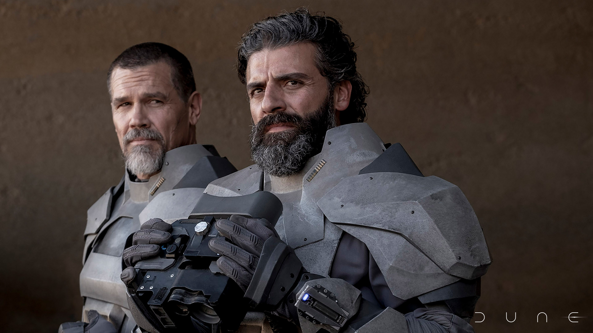

HOUSE ATREIDES
Gurney Halleck
Warmaster. Guardian. Poet.
A defiant warrior with the soul of a poet, Gurney Halleck has watched over Paul Atreides since he was born. Although he would never say it aloud, he loves Paul as though he were his own son. As the Duke’s Warmaster, Gurney Halleck has been forged in battle, and will do whatever it takes to protect House Atreides — a people as dear to him as the family he lost to the Harkonnens.
